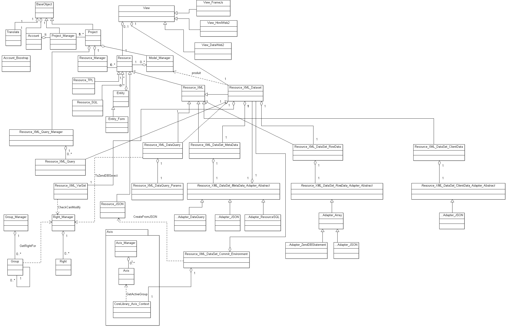

La lib Voozanoo est en ensemble d’objets PHP qui vont permettre de manipuler les entitées telles que les projets, questionnaires, question, ...
TODO : à mettre à jour
Exemple d’un code Voozanoo4:
<?php
$Account->ProjectCount();
$Account->Project['vaccilab']->Table['patient']->Select();
$Account->Project['vaccilab']->Table['patient']->RealName();
$Account->Project['vaccilab']->Table['patient']->Fields['nom']->type;
$Account->Project['vaccilab']->Table['patient']->Where('nom=Seb')->Table['bilan']->where('date=2010-02-24');
<?php
$sProjectName = "vaccilab";
$sTableName = "patient";
$Account->Project[$sProjectName]->Table[$sTableName]->Select();
//Récupération du dernier bilan d'un patient
$object = $Account->Project[$sProjectName]->Table[$sTableName]->Where($iRecordId);
$object->ShowOnForm();
$object2 = $Table['bilan']->last();
$object2->ShowOnForm();
Tous les objets seront définis par XML stockés en DB. Les ressources statiques (XSD, XSLT, TPL, SQL, ...) partagées par tous les comptes et tous les projets seront elles stockées sur le disque.
Description du cas: plusieurs objets décrits sous forme de XML, utilisent une variable X, cette variable X est supprimée par l’utilisateur. Comment trouver ces objets rapidement? Test de la cohérence des données en utilisant les XSD. Les XML (quelque soit leur structure) seront transformés (xslt) en XML de même structure pour pouvoir les valider avec le même XSD.
Les noms des différentes tables présentes dans Voozanoo4 comportent très souvent des fragments/portions de caractères à remplacer par le prefix du projet (ou le prefix du varset utilisé) :
Afin d’éviter la ré-écriture de cette logique à différents endroits de la librarie une classe a été créée pour centraliser les noms des tables et la logique de “parsing” : Core_Library_TName (~TableName)
Cette classe possède de nombreuses méthodes statiques permettant la récupération du nom de table à utiliser. Les méthodes liées aux tables utilisant le prefix du projet (sigl, ndmt) acceptent un paramètre de type Core_Library_Project, il sera utilisé pour le parsing de la table. Si ce dernier n’est pas fourni la classe utilisera le projet courant (Core_Library_Account::getInstance()->GetCurrentProject()).
<?php
Core_Library_TName::GetSysProject(); //retournera "sys_project"
Core_Library_TName::GetPjGroup(); //retournera "ndmt_pj_group" si le projet courant est Neodemat
Core_Library_TName::GetPjGroup( $oProjectSigl ); //retournera "sigl_pj_group", même si le projet courant est Neodemat
Note
Les noms de table relatifs au projet se récupèreront via des méthodes GetPj*** (GetPjAxis, GetPjGroup, ...), les noms de table relatifs à des varset se récupèreront via des méthodes GetVarset*** (GetVarsetData, GetVarsetDataGroup).
La notion de Token de Voozanoo4 se rapproche de la notion de CDataContainer présente dans Voo3 : La possibilité de stocker à un instant T un ensemble de variables (Context) ayant une date de péremption (optionnel) et liées à une session php précise (optionnel).
La seule façon de récupérer les informations relatives au Token est de connaitre l’identifiant du Token. Les données qui lui sont liées de ne peuvent pas être altérées par l’utilisateur.
La scénario type serait de placer un lien permettant de télécharger un PDF, les paramètres necéssaires à sa génération fournis en GET :
<a href="export/index/download/id/18/type/pdf/mode/full/foo/bar">Télécharger</a>
Un problème majeur survient : la possibilité que l’utilisateur manipule ces données (en remplacement pdf par html ou de l’id etc...). C’est là que l’utilisation du Token s’avère utile :
<?php
$oToken = new Core_Library_Token(array(
//Variable du context
'context' => array(
'id' => 18
'type' => 'pdf',
'mode' => 'full',
'foo' => 'bar'
),
//Expiration du token au bout d'un jour
'expiration_time' => 1
));
//$sTokenIdentifier contiendra l'identifiant auto-généré du token (8 caractères), exemple "80D0DF5F"
$sTokenIdentifier = Core_Library_Account::getInstance()
->getCurrentProject()
->TokenManager()
->Create( $oToken );
Le lien sera alors placé :
<a href="export/index/download/t/80D0DF5F">Télécharger</a>
Le code coté serveur sera en charge de la récupération du paramètre ‘t’ pour instancier un Token et récupérer les informations relatives au Token :
<?php
$oToken = Core_Library_Account::getInstance()
->getCurrentProject()
->TokenManager()
->GetAvailable( $this->GetRequest()->GetParam('t') );
$oToken->GetContext(); //Contient un tableau représentant les variables données lors de la création du token
Note
La méthode GetAvailable() retourne false si jamais le token ne peut être retourné car il est périmé ou si sa session ne correspond pas à la session courante.
Le Token de connexion (Core_Library_Token_Conn) à été créé pour répondre au besoin d’une authentification temporaire et limitative (accès à certaines ressources Acl et sur certains Varsets) sans pour autant créer un “vrai” utilisateur.
Il est par conséquent possible de créer un Token de connexion communicable à l’utilisateur par email (dans un lien) afin que ce dernier vienne changer son mot de passe.
La création d’une Token de connexion est identique à celle d’un Token simple, il réclame juste :
Warning
Selon les spécifications techniques : Ce sera de la responsabilité de l’action d’envoyer le token au client (donc pas d’envoie automatique du token)..
Par conséquent dans le cas où le token doit être utilisé pour plus d’une action il est necéssaire que l’Action (au sens ZendFramework) communique le token à la Frame.
L’idéal est d’utiliser le hook _<actionName>_get_render pour charger un paramètre sToken dans le contexte
<?php
protected function _foo_get_render( Core_Library_Event_Context $oContext )
{
$oProject = Core_Library_Account::GetInstance()->GetCurrentProject();
if ( true === $oProject->HasConnectionToken() ) //Connection token available ?
{
$oToken = $oProject->GetConnectionToken();
$oResourceJSON = $oContext->get( 'oResourceJSON' );
$aJson = $oResourceJSON->GetJSON();
$aJson['sToken'] = $oToken->GetToken(); //Put sToken inside Frame configuration ready to be sent
$oResourceJSON->SetJSON( $aJson ); //Refresh JSON content
}
parent::_get_render($oContext); //Call parent method to keep original behavior
}
Le monitoring liste les événements qui se produisent sur un projet, tels que la mise à jour d’une données, la connexion d’un utilisateur, un changement de structure, ...
Pour monitorer ces évenements, deux class ont été mises en place, l’une monitore les événements qui se produisent sur les données d’un varset (insertion, mise à jour, suppression, ...), et l’autre sur les événements tels que la connexion, la mise à jour des groupes, ...
La méthode GetLog de Core_Library_Project donne accès au logger.
// Log d'un événement sur un varset
$this->GetProject()->GetLog()->logRecordEvt( $sMsg, $iEvtType, $iVarSetId, $iRecordId, $aValues, $aMultiplesValues = array() );
// Log d'un événement
$this->GetProject()->GetLog()->logVznEvt( $sMsg, $iEvtType, array $aExtras = array() );
Les données du monitoring sont stockées dans les tables [PROJECT]_varsetmonitor_data (pour les événements sur varset) et [PROJECT]_evtlog_data (pour les autres événements).
NB: le système se base sur le composant Zend_Log, avec des writers spécifiques Voozanoo.
$this->GetProject()
->GetLog()
->logRecordEvt(
__METHOD__,
Core_Library_Log::VZN_REC_INSERT,
$this->_iIdVarset,
$aResult['insert_id'],
$aColumnKeyValue,
$aColumnKeyMultipleValue
) ;
$this->GetProject()->GetLog()->logVznEvt(
sprintf(
"Add \"%s\" (%d) child of \"%s\" (%d), axis = %d",
$sName,
$iIdGroup,
$this->GetGroup($iIdParent)->GetName(),
$iIdParent,
$iIdAxis
),
Core_Library_Log::VZN_EVT_GRP_ADD
);
1- Déclarer dans la class Core_Library_Log une constante décrivant l’événement VZN_EVT_*
2- Ajouter dans le dictionnaire système “type_evt” (table sys_dico_data) une entrée pour l’événement, dont le code doit correspondre à la valeur du code.
TODO : à mettre à jour
